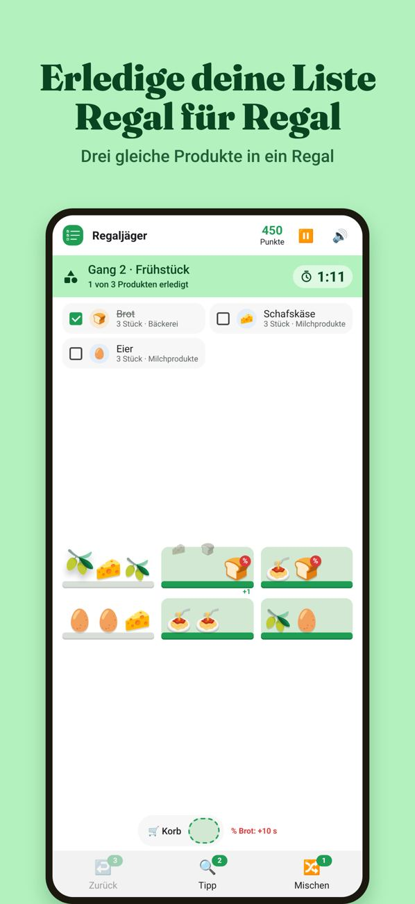

Regaljäger: Supermarkt-Puzzle
Ein Sortierpuzzle im Supermarktregal. In jedem Gang wartet eine Einkaufsliste: Stehen drei gleiche Produkte in einem Regal, wird es geleert. Hake alles auf deiner Liste ab, bevor die Zeit abläuft.
Kostenlos im App Store laden

So wird gespielt
- Tippe auf ein Produkt, dann auf ein Regal mit freiem Platz.
- Drei gleiche Produkte in einem Regal leeren das Regal.
- Ist das Regal leer, rücken die Produkte von hinten nach.
- Hake jedes Produkt auf der Liste ab, bevor die Zeit abläuft, und hol dir deinen Kassenbon.
Das steckt drin
- Bekannte Produkte: Tomaten, Kaffee, Brot, Waschmittel und mehr
- Gänge, die immer kniffliger werden: hintere Reihen, ein Korb, Angebote und verschlossene Kartons
- Tagesliste: dasselbe Rätsel für alle, jeden Tag ein neues
- Tägliche Aufgaben, Abzeichen, Serien und ein Gangplan
- Zurück, Tipp und Mischen, Kombopunkte und ein Kassenbon mit Sternen
- Keine Pflichtwerbung: eine kurze Werbung nur, wenn du +30 Sekunden oder eine Extrahilfe willst
- Offline spielbar, kein Konto nötig
Kostenlos im App Store laden
Fragen
Ist Regaljäger kostenlos?
Ja. Das Spiel lässt sich kostenlos laden und spielen. Es gibt freiwillige In-App-Käufe (ein Hilfepaket und Premium) und freiwillige Werbung gegen Belohnung; nichts davon ist nötig, um die Gänge zu schaffen.
Funktioniert es offline?
Ja. Du kannst ohne Internetverbindung und ohne Konto spielen.
Auf welchen Geräten läuft es?
Auf dem iPhone, aus dem App Store.
Shelf Hunter: So geht's, Schritt für Schritt
Shelf Hunter Tipps: 9 Wege, jeden Gang mit 3 Sternen zu schaffen
Support
Fragen oder Probleme: oguz.kamburoglu@gmail.com
Datenschutzerklärung (Türkisch)
Türkçe · English · Deutsch · Español · Français · Português · Русский